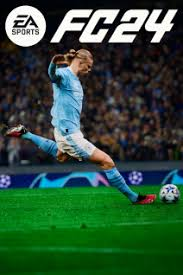

Movie
The Dark Knight
.jpg)
"The Dark Knight" is a 2008 American superhero film directed by Christopher Nolan. It is the second installment in Nolan's Batman trilogy, following "Batman Begins" (2005). The film centers around Batman (played by Christian Bale) as he faces a new, terrifying foe: the Joker (played by Heath Ledger). Plot: The movie is set in Gotham City, where crime has decreased thanks to Batman's efforts and the work of District Attorney Harvey Dent (played by Aaron Eckhart). However, a chaotic and psychopathic criminal known as the Joker emerges, threatening to unleash total anarchy in the city. He begins a series of brutal attacks, challenging Batman, Gotham City's police, and Harvey Dent to stop him. The Joker terrorizes the city by manipulating people and turning them against each other, forcing Batman to confront the limits of his own morality and sense of justice. The film delves into themes like chaos vs. order, good vs. evil, and the personal sacrifices required to fight against evil. The Joker's schemes lead to tragic consequences, especially for Harvey Dent, who undergoes a transformation into the vengeful and disillusioned villain Two-Face. The film concludes with Batman taking the blame for Dent's actions to preserve his image as a hero in the eyes of the public, making him a fugitive. Themes and Reception: "The Dark Knight" was praised for its dark and complex narrative, Nolan's direction, and Heath Ledger's iconic portrayal of the Joker. Ledger posthumously won an Oscar for Best Supporting Actor for his performance. The film is widely regarded as one of the greatest superhero movies of all time and has had a significant impact on the genre.
Video Game
FC 24
FC 24 is a football simulation video game, developed and published by EA Sports. It's part of the long-running EA Sports FC series, which was previously known as the FIFA series before a rebranding. The game aims to simulate real-life football, offering players a realistic and immersive experience of the sport. Gameplay: FC 24 allows players to take control of real-world football teams, both club and national teams, and compete in matches, tournaments, and leagues. The game features a variety of modes, including: Career Mode: Players can manage a football club or take on the role of a single player, guiding them through a football career. As a manager, players are responsible for tactics, transfers, and the overall success of the team. As a player, the focus is on developing skills and rising through the ranks. Ultimate Team: This popular mode lets players build their own custom team by collecting virtual cards of real-life players. The goal is to create the best possible squad by trading, buying, and winning cards. Players then compete against others online or in single-player challenges. Pro Clubs: In this online mode, players create and customize their own footballer and join a team with other players. Each player controls their own footballer in matches, and teamwork is key to success. Kick-Off and Online Seasons: These modes allow for quick matches, either against AI or other players online. In Online Seasons, players compete in a league system, trying to climb the divisions. What it is About: The core of FC 24 is the experience of playing football, whether through managing a team, building a dream squad, or controlling individual players. The game emphasizes realistic gameplay mechanics, including player movements, team strategies, and in-game physics. With updated rosters, real-life stadiums, and enhanced graphics, FC 24 aims to deliver an authentic football experience for fans of the sport. Whether you're interested in managing every aspect of a football club, collecting the best players in Ultimate Team, or just enjoying a quick match with friends, FC 24 provides a variety of ways to engage with the world of football.
Cuntry
Greece
.jpeg)
Greece is a country in southeastern Europe known for its rich history, beautiful landscapes, and delicious cuisine. History: Greece is often referred to as the cradle of Western civilization. It is the birthplace of democracy, Western philosophy, and the Olympic Games. The ancient Greeks made significant contributions to art, architecture, science, and literature. Famous historical sites include the Acropolis in Athens, the ruins of Delphi, and the ancient city of Olympia. Cuisine: Greek food is known for its use of fresh ingredients like olive oil, vegetables, herbs, and seafood. Popular dishes include moussaka (a baked dish with layers of eggplant, minced meat, and béchamel sauce), souvlaki (grilled meat skewers), and spanakopita (spinach and feta cheese pie). Greek salads, often featuring tomatoes, cucumbers, olives, and feta cheese, are also a staple. Beautiful Cities: Greece is home to many picturesque cities and islands. Athens, the capital, is famous for its ancient monuments and vibrant culture. Thessaloniki, the second-largest city, is known for its rich history and lively festivals. The islands of Santorini and Mykonos are world-renowned for their stunning landscapes, whitewashed buildings, and crystal-clear waters. Culture: Greek culture is characterized by its strong traditions in music, dance, and religious festivals. The Greek Orthodox Church plays a significant role in daily life. Traditional Greek music often features instruments like the bouzouki, and dances like the sirtaki are performed at celebrations. Tourism: Greece is a top tourist destination, attracting visitors with its ancient ruins, beautiful beaches, and warm Mediterranean climate. Popular tourist spots include the ancient ruins in Athens, the monasteries of Meteora, and the beaches of Crete and the Cyclades islands.